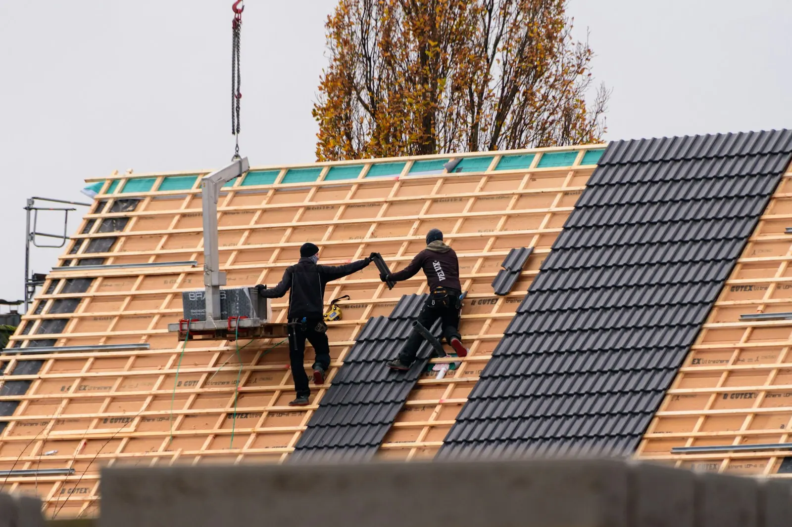
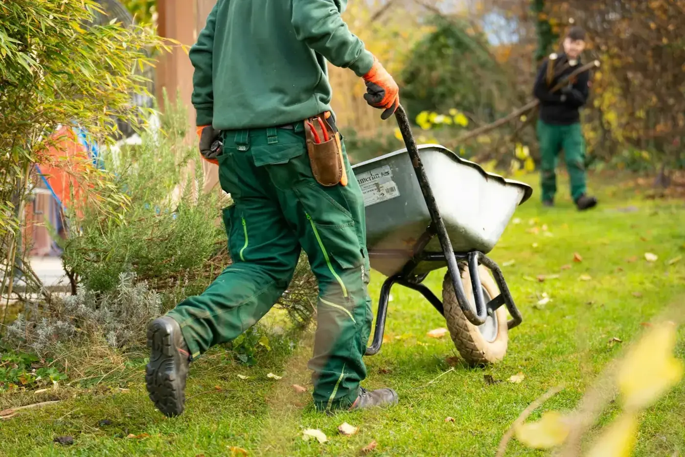
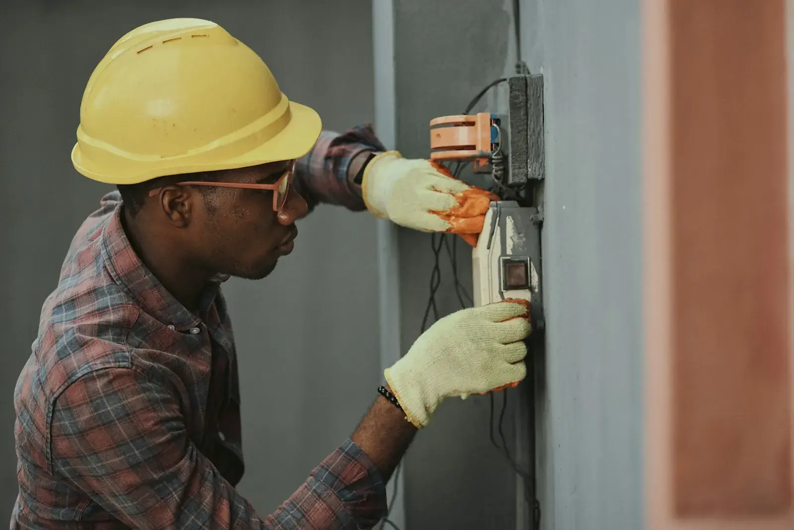

Basic
399 €
pro Monat, netto
Für den Start auf einem Kanal.
- 1 Social-Media-Kanal
- 4 Beiträge im Monat
- 4 Storys
- Contentplanung
- Texte & Hashtags
- Monatsreport
Dein Betrieb. Deine Geschichte. Sichtbar auf Social Media.
Ich bin Emily, Gründerin der Social-Media-Agentur WEIGL SOCIAL, und mache Unternehmen aus Regensburg und der Region sichtbar, mit professionellen Reels, authentischen Fotos und einer klaren Contentstrategie. Vom ersten Konzept bis zum fertigen Beitrag bekommst du alles aus einer Hand.
Du und dein Team leistet jeden Tag gute Arbeit. Aber online sieht man davon zu wenig? Zwischen Kunden, Projekten und dem Tagesgeschäft bleibt Social Media oft auf der Strecke. Genau hier komme ich ins Spiel.
Ich entwickle passende Inhalte, komme direkt zu dir in den Betrieb und produziere Fotos und Videos, die zeigen, was dein Unternehmen besonders macht. Dabei schauen sich Kunden und Bewerber genau dort an, wie du arbeitest.
Du konzentrierst dich auf dein Geschäft. Ich kümmere mich um deinen Content.
Alle LeistungenReels und Storys erreichen auf Instagram und TikTok die meisten Menschen, gerade die jungen Fachkräfte von morgen. Ich drehe im Hochformat, schneide selbst und denke dabei an deine Zielgruppe.



Beispielhafte Formate zur Veranschaulichung. Bildquelle: Unsplash.
Ich komme bis zu sechs Stunden zu dir auf die Baustelle, in die Werkstatt oder in den Ausstellungsraum und produziere Fotos und Kurzvideos aus verschiedenen Perspektiven.
899 €einmalig, netto
Der Content Day umfasst die Produktion. Bearbeitung, Veröffentlichung und Betreuung laufen über eines der Pakete.
Die laufende Betreuung gibt es in drei Paketen mit monatlicher Abrechnung. Was enthalten ist, steht schwarz auf weiß.
399 €
pro Monat, netto
Für den Start auf einem Kanal.
699 €
pro Monat, netto
Für Betriebe, die regelmäßig mit Reels sichtbar sein wollen.
1.199 €
pro Monat, netto
Für volle Präsenz mit Strategie und laufender Optimierung.
Vom ersten Gespräch bis zum ersten Monatsreport. Du weißt immer, was als Nächstes passiert.
Bei dir im Betrieb, bei einem Kaffee. Du erzählst, ich höre zu und schaue mir an, was du schon hast.
Im Social Brand Book halten wir fest, wie du auftrittst, wen du erreichst und wie oft du postest.
Am Content Day entstehen in wenigen Stunden Fotos und Reels für viele Wochen.
Ich poste, antworte deiner Community und zeige dir jeden Monat, was es gebracht hat.

Ich arbeite mit kleinen und mittelständischen Betrieben aus Regensburg, der Oberpfalz und Niederbayern. Zu viel zu tun für eine eigene Marketingstelle, zu gut, um unsichtbar zu bleiben.
Azubis und Fachkräfte zwischen 15 und 25 findest du heute vor allem auf Instagram und TikTok. Wer dort stattfindet, wird gefunden.
„Ich verkaufe keine Reichweite. Ich verkaufe Sichtbarkeit mit einer Linie dahinter.“
Erzähl mir von deinem Betrieb. Ich melde mich innerhalb von einem Werktag und wir finden einen Termin bei dir vor Ort.